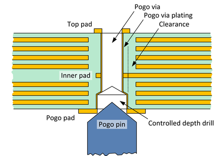
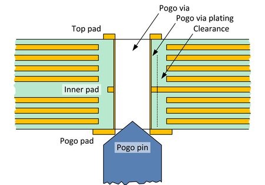

XPS256 VHD pogo pad and via design
Due to the higher density of pogo pins, the VHD pogo block of XPS256 VHD pogo cable assemblies requires the observance of product-specific rules for designing pogo pads and pogo vias.
The dimensions defined in this section are recommended when designing pogo pads and pogo vias for the VHD pogo block assembly of a DC Scale XPS256 card.
Optimized pogo via design
The following design uses a minimized hole diameter of the via in combination with a controlled depth drill as pogo pin contacting area. The design is more complex than the Standard pogo via design for the XPS256 VHD block, but provides more space for routing on the inner layers.
| Pogo pad | Size: |
56 mil (~1.42 mm … 1.5 mm) |
| Controlled depth drill | Size: | 26 +1/-3 mil finished hole size (0.66 +0.025/-0.076 mm) |
| Depth: | 20 ±7 mil (0.508 mm ±0.178 mm) | |
| Top pad | Size: | 31.5 mil (0.8 mm) |
| Pogo via | Drill size: | 17.7 mil finished hole size (0.45 mm)1) |
| Plating thickness: | 1 mil (0.0254 mm)1) | |
| Inner pad | Size: | 28.3 mil (0.72 mm) |
| Clearance to planes and traces: |
5.9 mil (0.15 mm) for 1 oz 6.9 mil (0.175 mm) for 2 oz |

Standard pogo via design
The following design uses the same hole diameter for the via and for the pogo pin contacting area. The design is simpler than the Optimized pogo via design but needs more space for the via and therefore provides less space for routing on the inner layers.
| Pogo pad | Size: |
56 mil (~1.42 mm … 1.5 mm) |
| Top pad | Size: | 43.3 mil (1.1 mm) |
| Pogo via | Drill size: | 26 +1/-3 mil finished hole size (0.66 +0.025/-0.076 mm)1) |
| Plating thickness: | 1 mil (0.0254 mm)1) | |
| Inner pad | Size: | 37 mil (0.94 mm) |
| Clearance to planes and traces: |
5.9 mil (0.15 mm) for 1 oz 6.9 mil (0.175 mm) for 2 oz |

Functional changes
- Introduced in SmarTest 8.3.4